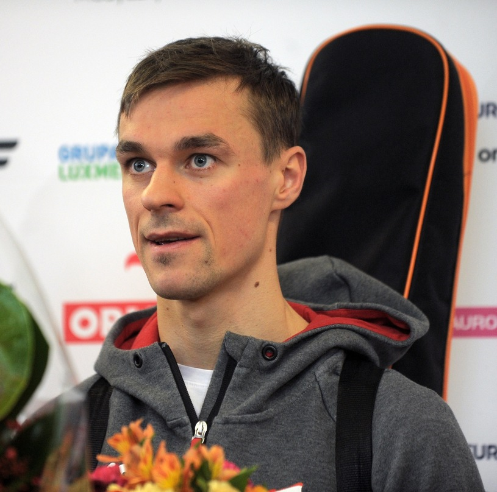
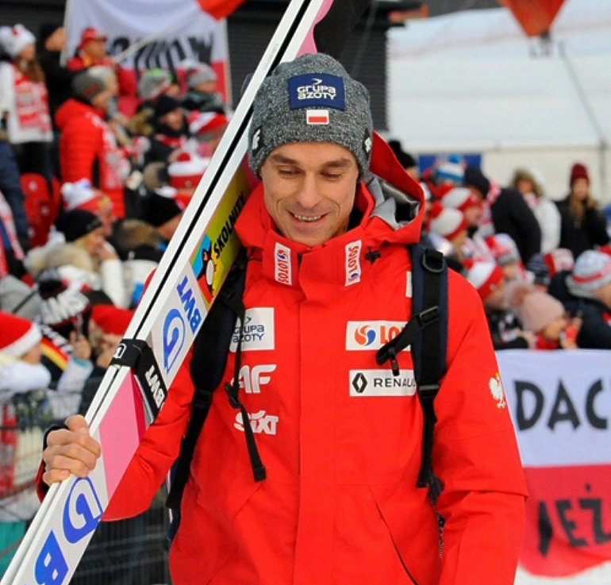
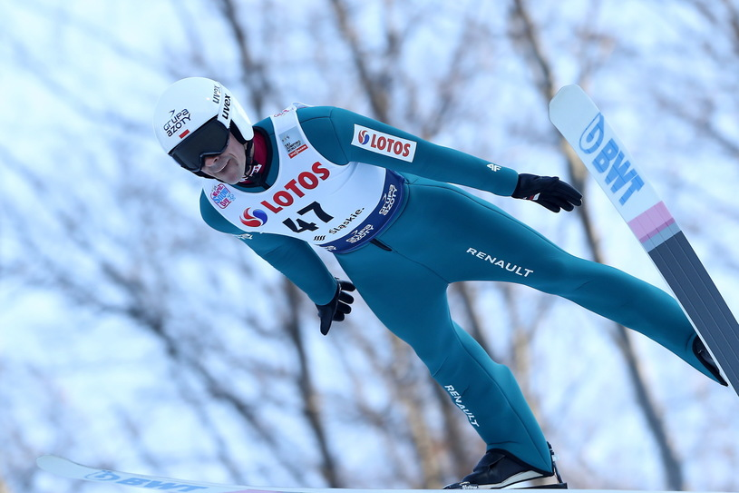

Piotr Żyła przyszedł na świat 16 stycznia 1987 roku w Cieszynie. Od najmłodszych lat wykazywał zainteresowanie oraz zdolności do skoków narciarskich, co zaowocowało odpowiednim wyborem drogi kształcenia. Piotr ukończył Zespół Szkół Mistrzostwa Sportowego, który słynie z przygotowywania do przyszłej kariery narybku polskich sportów zimowych.
Jednym z głównych zainteresowań Piotra jest gra w piłkę nożną. Jak sam przyznaje, uwielbia trenować, a ciężka praca i godziny spędzone bądź to na skoczni, bądź na sali gimnastycznej sprawiają mu wielką przyjemność.
W 2003 ukończył naukę w Zespole Szkół Mistrzostwa Sportowego w Szczyrku[37], natomiast w 2006 został absolwentem SMS w Zakopanem. W 2006 ożenił się z Justyną Lazar, siostrą cioteczną Adama Małysza. Mają dwoje dzieci: Jakuba (ur. 2007) i Karolinę (ur. 2012). 18 września 2018 odbyła się ich pierwsza sprawa rozwodowa[40]. W listopadzie 2018 para otrzymała rozwód za porozumieniem stron. Ma siostrę Dorotę, która uprawiała skoki narciarskie i snowboard.
Pierwsze kroki na skoczni Piotr Żyła stawiał w wieku 8 lat. W 2004 roku jako 17-latek zadebiutował na arenie międzynarodowej w Pucharze Kontynentalnym w Sankt Moritz, a kilka miesięcy później podczas Mistrzostw Świata Juniorów rozgrywanych w fińskim Rovaniemi wraz z kolegami z drużyny wywalczył srebrne medale. W rywalizacji indywidualnej uplasował się na 14. pozycji. Nazwisko „Żyła” w oficjalnych wynikach zawodów Pucharu Świata pojawiło się po raz pierwszy w sezonie 2005/2006, kiedy z powodzeniem wystartował w zawodach najwyższej rangi, zajmując 19. i 20. miejsca w Sapporo. W sezonie 2006/2007 podczas konkursów w Titisee-Neustadt zdominowanych przez Adama Małysza kibice ponownie usłyszeli o Piotrze. Wysoka forma zaprezentowana w Schwarzwaldzie, a potwierdzona trzy dni później w Klingenthal, zyskała uznanie w oczach ówczesnego szkoleniowca polskiej kadry, Hannu Lepistoe, i zaowocowała powołaniem do drużyny na Mistrzostwa Świata 2007 w Sapporo. Tego samego Sapporo, gdzie ponad dwanaście miesięcy wcześniej Żyła stawiał swoje pierwsze kroki w Pucharze Świata. Wyniki z zimy 2006/2007 nie znalazły odzwierciedlenia w kolejnych edycjach Pucharu Świata i Letniej Grand Prix, a kilka słabszych sezonów z rzędu pociągnęło za sobą falę negatywnych konsekwencji. Polak stracił miejsce w kadrze, a co za tym idzie, również stypendium i wsparcie związku. Jego zawodnicza przyszłość stanęła pod znakiem zapytania. Potrzebny był bodziec, punkt zwrotny i zmiana sposobu postrzegania zawodowego sportu.
Moment przełomowy nastąpił w styczniu 2011 roku. Po dobrych występach na krajowym podwórku Piotr otrzymał szansę startu w świetnie sobie znanym japońskim Sapporo, a następnie został powołany do grupy narodowej reprezentacji Polski na Puchar Świata w Zakopanem. W ostatnim z trzech konkursów rozgrywanych pod Giewontem wystąpić mogli już tylko najlepsi Polacy, sam crème de la crème. Świetne skoki podczas kwalifikacji, a później piątkowych i sobotnich zmagań sprawiły, że w niedzielę wiślanin ponownie zaprezentował się biało-czerwonej publiczności. Od tej chwili kadry na kolejne zawody, również na Mistrzostwa Świata 2011 w Oslo, Piotr już nie opuścił. Impreza rozgrywana w stolicy Norwegii była dla 25-latka niezwykle udana i otworzyła mu furtkę do pierwszej kadry reprezentacji Polski na kolejny sezon. Wywalczone na Midtstubakken i Holmenkollen 19. i 21. lokata – będące największymi indywidualnymi sukcesami w karierze – oraz znakomite starty w obu konkursach drużynowych przywróciły wiarę i zwiastowały nadejście lepszych czasów.  Sezon 2011/2012 rozpoczął się dla Piotra od nieudanego występu w otwierającym Letnią Grand Prix turnieju Lotos Poland Tour. Kilkadziesiąt dni później o słabszych startach w Wiśle, Szczyrku i Zakopanem Polak mógł już zapomnieć, bowiem w Hakubie dwukrotnie stanął na podium, zajmując drugą lokatę. Cały cykl Piotr ukończył na rewelacyjnej piątej pozycji, pieczętując najlepsze w karierze lato piątym miejsce w Ałmacie i czwartym w Klingenthal. Wyczekiwana od długiego czasu uwertura sezonu zimowego przyniosła 19. pozycję w Kuusamo. Wynik uzyskany w mroźnej Finlandii na kole podbiegunowym szybko poszedł w zapomnienie za sprawą weekendu w Lillehammer. Na Lysgardsbakken Piotr najpierw otarł się o pierwszą „10”, a dzień później uplasował się na 7. miejscu. Za wyjątkiem nieco gorszego Turnieju Czterech Skoczni do samego końca sezonu Piotr regularnie zdobywał punkty w zawodach Pucharu Świata, coraz częściej pukając do ścisłej czołówki. Apogeum formy nadeszło na przełomie lutego i marca. Wiślanin dwukrotnie znalazł się w najlepszej „10” zawodów, powtarzając w Oslo wyczyn z Lillehammer, a w klasyfikacji generalnej uplasował się ostatecznie na 19. lokacie z 267 punktami na koncie.
To właśnie w 2012 roku Piotr tak pokochał loty narciarskie. Z wzajemnością. W lutym na trzecim co do wielkości mamucie w Oberstdorfie oddał niebotyczny skok na odległość 217,5 metra, którego nie zdołał jednak ustać. Po kilku dniach zawodnicy przenieśli się do norweskiego Vikersund, gdzie rozegrano Mistrzostwa Świata w lotach narciarskich. W konkursie indywidualnym na rezultaty ogromny wpływ miał wiatr. Warunki atmosferyczne pokrzyżowały plany Polaka o dobrym wyniku, ale nie o dalekim lataniu. Co się odwlecze, to nie uciecze. W niedzielę, ostatniego dnia rywalizacji, Piotr dwukrotnie bił rekord życiowy w długości skoku narciarskiego. Zaczęło się od 223,5 metra, a skończyło na 232,5 metra i najlepszym wyniku w historii Polski.  Sezon 2012/2013, przynajmniej w chwili swojego zakończenia, zasłużył na jedno określenie „wymarzony”. Aczkolwiek, zimowa bajka rozpoczęła się od prawdziwego koszmaru. We wstępnej fazie sezonu Piotr ani razu nie awansował do drugiej serii, a słaba forma zmusiła sztab szkoleniowy do wycofania go, a także Kamila Stocha, z próby przedolimpijskiej w Sochi. Tuż po Turnieju Czterech Skoczni, w którego konkursach wiślanin wywalczył w sumie 11 pucharowych punktów, zaplanowano pierwsze w historii zawody w Wiśle, rodzinnym mieście Piotra Żyły. Przed własną publicznością Polak niesiony gorącym dopingiem osiągnął najlepszy rezultat w karierze. Szósta lokata po serii nieudanych występów dała początek nowemu rozdziałowi w życiu 27-latka. Do momentu rozpoczęcia Mistrzostw Świata w Val di Fiemme jeszcze dwukrotnie zajął 6. miejsce, raz znalazł się w czołowej „10” i za każdym razem zdobywał punkty.
We Włoszech polscy skoczkowie czuli się jak w domu. Atmosferę na trybunach podgrzewali dobrze znani spikerzy z Zakopanego, a polskie flagi zalały podnóże obiektu Trampolino dal Ben. Po indywidualnym triumfie Kamila Stocha na konkurs drużynowy przybyło kilkanaście tysięcy Polaków, którzy marzyli o historycznym medalu biało-czerwonych. Sobotni wieczór dnia 2 marca na długo zapisał się w pamięci kibiców i zawodników. Pierwsze wyniki mówiły o czwartej lokacie z minimalną stratą do trzecich Niemców i najniższego stopnia podium. Długie obrady, które toczyły się już po zakończeniu rywalizacji, i decyzja podjęta przez jury o odjęciu reprezentacji Norwegii niesłusznie dodanych punktów za obniżoną belkę startową zmieniły wszystko. I co najważniejsze dały polskiej ekipie w składzie Kamil Stoch, Maciej Kot, Dawid Kubacki i Piotr Żyła upragniony brąz! Nikt już nie patrzył na niewielką różnicę pomiędzy Polakami a niemiecką drużyną – liczyły się spełnione marzenia.  Każdy młody zawodnik – bez wyjątku – oglądając poczynania Matti Nykaenena, Jensa Weissfloga, Espena Bredesena czy ostatnio Adama Małysza, wierzy, że kiedyś przyjdzie mu doświadczyć tego samego, pozna smak triumfu i wysłucha– w przypadku Polaków – „Marszałka Dąbrowskiego”. W 2012 roku Piotr Żyła po pierwszej serii konkursu w Oslo zajmował trzecie miejsce i miał szanse, jeśli nie na zwycięstwo, to na podium. Wtedy nie poradził sobie jeszcze z perspektywą historycznego wyczynu i spadł na 8. miejsce. W sezonie 2012/2013 sytuacja się powtórzyła, była analogiczna to tej sprzed dwunastu miesięcy. – Cały czas myślałem wtedy o podium, o tym, że mogę je wywalczyć. W tym roku w ogóle nie zastanawiałem się nad tym. Szedłem na górę i koncentrowałem się na tym, żeby oddać najlepszy skoki, na jaki mnie stać – opisywał swoje. I tak jak powiedział, tak też zrobił. 17 marca 2013 roku Piotr osiągnął to, co jeszcze rok wcześniej okazało się niemożliwe. Zwyciężył i to w miejscu tak symbolicznym, wyjątkowym dla każdego narciarza. W drugiej serii oddał jeden z najlepszych skoków w karierze. Wylądował na 133 metrze i 50 centymetrze, wytrzymał presję i potwierdził swoją klasę. Wygrywając zawody wprawił w istny szał radości miliony Polaków zgromadzonych przed telewizorami i tysiące wiwatujących mu na monumentalnej Holmenkollen. Pięć dni później trzecim miejscem w Planicy ukoronował wspaniały sezon w swoim wykonaniu. Na przestrzeni tak naprawdę trzech miesięcy uzbierał 485 punktów i zakończył zmagania w czołowej „15”.